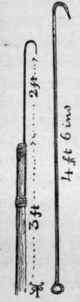

Crawfish
Description
This section is from the book "Sea Fishing", by John Bickerdyke. Also available from Amazon: Sea Fishing.
Crawfish
Crawfish figure in the period called classical. Pliny, who it must be feared was a teller of fish stories, speaks of one four cubits long. The ancient Romans used to eat them in company with asparagus. There is a story told of one of the three notorious gluttons bearing the name of Apicius, that, hearing crawfish of most extraordinary size and exquisite flavour were to be obtained on the coast of Africa, he chartered a ship and proceeded thence. Sad to relate, he found the crawfish of that side of the Mediterranean little better than those of his native land, so in great disgust put about and forthwith returned to Italy. To see crawfish at their best he should have gone to the West Indies, where he would have found most gorgeous members of this particular family. Off South America they are very abundant, particularly round the island of Juan Fernandez.
Those who would join in the delights of crab and lobster catching should provide themselves with a barbless iron hook, either fixed into a wooden handle or with the shank extended to four or five feet and turned into a ring at the end. The hook itself should measure about two and a half inches across, the point turned very slightly outwards, and, for crabs and lobsters, must not be too sharp. For conger eels it cannot be sharp enough ; so, if all three kinds of fish are expected, take two hooks. It is well to be provided with a small file wherewith to sharpen the points, which soon get blunted against the rocks. Other things are wanted beside the hooks ; to wit, youth, health, strength, vigour, good temper, a light hand and sensitive touch. An ordinary fisherman's creel slung on the back to carry the prey in, and either a small round prawn net or a landing net, will be found useful. Also some fine twine to tie up the claws of those monstrous big lobsters we are going to catch. We must make up our minds to get wet, so should dress accordingly ; an old pair of gymnasium shoes, flannels, and a jersey—there is no better attire for the purpose.
It must be the time of spring tides—that is absolutely essential—or we shall get no lobsters, for their holes are generally situated so near the lowest low-water mark that they are not uncovered at other times. Even then they are, as often as not, a few inches below the surface. How well I remember my first day's crab hooking ! My tutor was a poet, and it was a beautiful sight to see the kindly man of verse slipping among the rocks, putting his little iron hook into a hole here and a hole there, sounding them for shell fish. The tide was ebbing, and just as we reached the shore I saw a conger of several pounds swimming slowly seaward adown a miniature creek. I dashed at him with my hook, but missed him. Again and again I struck wildly, and finally brought him out on to the rocks and hammered him until he was a shapeless mass. I had tasted blood and was ravening for more, but the poet said it was no use to continue fishing until the tide was lower. So we sat down and looked at the blue sea.
Soon the poet strolled off, and presently came back with a lobster—a big one, but minus one claw—and I think he also had three prawns. Then we started wandering over the rocks, trying every pool for prawns and every likely hole for crabs. Lobster holes, which are a thing of themselves, were few—the poet knew them, and I did not. There were, however, no more lobsters forthcoming. None the less, it was a day full of joy and novelty. There was one big conger which tried us severely. It was in a small cavity, one entrance to which was so small that I could only just get my hook into it. I could feel his soft sides, and directly he was touched there was a great slap of his tail in, I suppose, the pool of water standing below the rock. There were two ways into this little cavern, so the poet guarded one door and I the other ; and ever and anon, as we poked about, our two hooks would catch one in the other, and thinking we had a fair hold of the fish we would each give a terrific pull and nearly break our wrists ; but finally my hook, which had long before been thoroughly blunted on the rocks, somehow or other caught hold of the creature, out he came kicking, and we despatched him.
CRAB, LOBSTER, AND CONGER HOOKS.
This method may be described as fishing on land, in the dark, by touch. The hook has to be most gingerly inserted into every likely-looking hole, and after a while, it is not difficult to distinguish between the rock and the shell of a crab or the yielding body of an eel. A somewhat mean way of finding crab holes is to take a piece of line about two yards in length, fasten to one end a piece of dead fish, to the other a fragment of white or red rag and a small stone. Place this among the rocks at low water. As the tide rises and covers the spot a crab will as likely as not seize the fish and carry it off to his lair, leaving the piece of rag outside to betray him when next it is low water. Of course a number of these informers may be laid along the seashore.. Lobster holes have to be learned, and the crab-hooker who tries his skill in a new country is not likely to catch many of these shell fish, though he may be lucky enough with crabs and congers. The lobster holes, as I have said, are close to the low-water mark ; sometimes there is a few feet of water over them, and they are not infrequently provided with bolt holes. The local people know this well enough, and will always put a prawn net over the bolt hole while they ply the front door with their crab hook. When either crab or lobster takes alarm, and finds that there is an enemy attacking him, if he has not a back door by which to retreat he wedges himself up with his back against the walls of his little cave, and is most difficult to dislodge. Professional fishermen who catch a great many crabs rarely give any of these creatures time to fix themselves. The moment they feel the shell of a good crab the hook is turned upwards, and the unfortunate animal is twisted out.
Continue to:
Tags
fishing, hooks, bait, fishermen, spanish mackerel, mackerel fishing